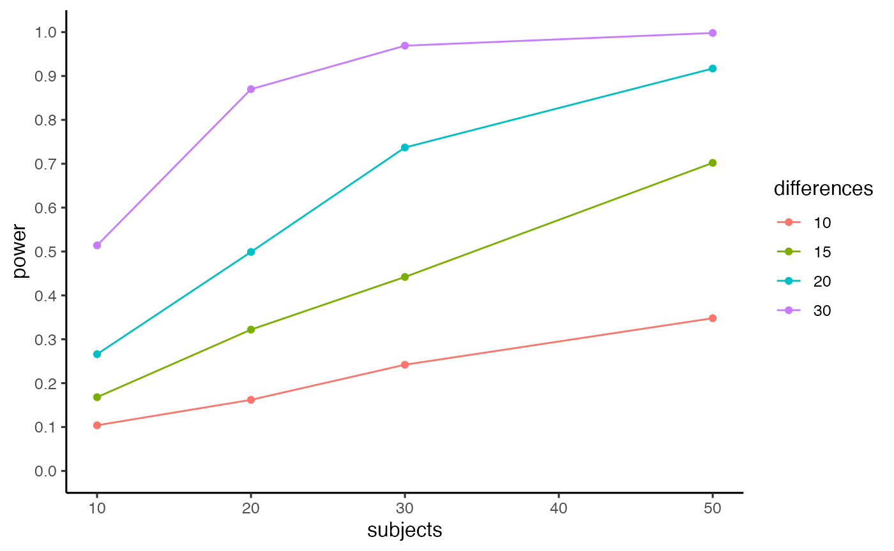

Power Analysis for Conflict Designs
Matthew Crump
2021-12-03
conflictPower-vignette.Rmd
library(conflictPower)
library(kableExtra)
library(dplyr)Statistical power for detecting conflict effects (e.g., Stroop effects, flanker effects, Simon effect, etc.) depends on the number of subjects, number of trials in each condition (conflict vs. no conflict), the size of the conflict effect (e.g., mean difference between conflict and no-conflict trials), the alpha criterion, and the underlying variability in the reaction time distributions for each subject for conflict and no-conflict conditions.
This package includes functions for conducting statistical power analysis for conflict designs. The approach uses Monte-Carlo simulation, and allows specification of all of the above parameters. Parameters for variability in base reaction time distributions are used to sample single-trial data from an ex-Gaussian distribution, using the rexgauss function from the retimes package. The rexgauss function samples n observations from an ex-Gaussian distribution, with parameters mu (mean of a normal distribution), sigma (standard deviation of a normal distribution), and tau (exponent of an exponential distribution).
To conduct a power analysis using this package, the user is asked to provide estimates of the relevant parameters. A “reasonable” estimate of power, depends on reasonable parameter estimates. In this case, the user needs to have reasonable estimates of the parameters for the base reaction time distributions (mu, sigma, tau), and the size of the conflict effect.
Power for a conflict effect
The first example shows the estimation of statistical power based on estimates of reaction time distributions provided by Crump, Brosowsky, and Milliken (2017). They conducted web-based versions of Stroop and Flanker designs. The retimes package was used to estimate individual subject parameters for reaction distributions for conflict and no-conflict trials in each experiment. The results of the power-analysis below depend on these parameters, and the power calculations would change for a different set of assumptions. For example, RT distributions from lab-based studies may be less variable, and power would increase as a result.
Crump, Brosowsky, and Milliken (2017) found the following parameter estimates for mu, sigma, and tau, for conflict and no-conflict distributions in a web-based flanker study.
mu <- c(625.4,732.4)
sigma <- c(68.6,80.7)
tau <- c(166.3,157.5)
flanker <- data.frame(mu,sigma,tau)
row.names(flanker) <- c("no conflict","conflict")
knitr::kable(flanker)| mu | sigma | tau | |
|---|---|---|---|
| no conflict | 625.4 | 68.6 | 166.3 |
| conflict | 732.4 | 80.7 | 157.5 |
Given the above assumption about the variability of reaction time distributions, the c_power_fast() function can be used to estimate statistical power for a design any number of subjects, and any number of trials per condition.
The example below uses 20 subjects, and 50 trials per condition. The size of the conflict effect is programmed as the difference between mu parameters (732.4 - 625.4 = 107).
The function returns statistical power, which in this case is very high (power = 1).
c_power_fast(subjects=20,
c_nmst = c(50,732.4,80.7,157.5),
nc_nmst = c(50,625.4,68.6,166.3),
num_sims = 10000,
alpha = .05)
#> [1] 1It can be more useful to see a fuller range of power estimates as a function of number of subjects and effect-size. The c_power_table function takes a vector of subject numbers and a vector of mean differences, computes power for each combination, and returns a table and figure.
pwr.out <- c_power_table(subjects = c(10,20,30,40,50),
differences = c(10,20,30,40,50),
c_nmst = c(50,732.4,80.7,157.5),
nc_nmst = c(50,625.4,68.6,166.3),
num_sims = 100,
alpha = .05)
kable(pwr.out$power_table) %>%
kable_styling() %>%
scroll_box(width = "500px", height = "400px")| subjects | differences | power |
|---|---|---|
| 10 | 10 | 0.04 |
| 20 | 10 | 0.05 |
| 30 | 10 | 0.04 |
| 40 | 10 | 0.08 |
| 50 | 10 | 0.10 |
| 10 | 20 | 0.13 |
| 20 | 20 | 0.27 |
| 30 | 20 | 0.37 |
| 40 | 20 | 0.53 |
| 50 | 20 | 0.48 |
| 10 | 30 | 0.39 |
| 20 | 30 | 0.74 |
| 30 | 30 | 0.91 |
| 40 | 30 | 0.93 |
| 50 | 30 | 0.95 |
| 10 | 40 | 0.61 |
| 20 | 40 | 0.95 |
| 30 | 40 | 0.99 |
| 40 | 40 | 1.00 |
| 50 | 40 | 1.00 |
| 10 | 50 | 0.88 |
| 20 | 50 | 1.00 |
| 30 | 50 | 1.00 |
| 40 | 50 | 1.00 |
| 50 | 50 | 1.00 |
pwr.out$power_curve
Power for a difference between two conflict effects
Researchers interested in adaptive control processes are often interested in factors in that modulate the size of the conflict effects. In this case, the primary question of interest is whether a conflict effect in one condition is larger or smaller than a conflict effect in another condition. For example, designs that manipulate the proportion of conflict and no-conflict items (e.g., list-wide, item-specific, and context-specific proportion conflict designs) commonly find smaller conflict effects for mostly conflict conditions compared to mostly no-conflict conditions.
The pc_power_fast (pc=proportion conflict) function computes statistical power for the difference between two conflict effects. The mc_c_nmst and mc_nc_nmst parameters specific the number of trials and RT distributions for the conflict and no-conflict trials in the mostly conflict (mc) condition. The mnc_c_nmst and mnc_nc_nmst parameters specific the number of trials and RT distributions for the conflict and no-conflict trials in the mostly no-conflict (mnc) condition.
The example below uses the ex-Gaussian parameters from above to estimate power for a CSPC design, where items are presented in either a mostly conflict or a mostly no-conflict context across trials. There is an 80ms conflict effect (mean difference) in the mostly conflict condition (705-625 = 80), and a 100 ms conflict effect in the mostly no conflict condition (725-625 = 100), for an overall difference (CSPC effect) of 20 ms between the conflict effects. This example also assumes a total of 384 trials, with 144 conflict (75%) and 48 no-conflict (25%) trials in the mostly conflict context, and 48 conflict (25%) and 144 no-conflict (75%) trials in the mostly no-conflict context.
pc_power_fast(subjects=16,
mc_c_nmst = c(144,705,80.7,157.5),
mc_nc_nmst = c(48,625.4,68.6,166.3),
mnc_c_nmst = c(48,725,80.7,157.5),
mnc_nc_nmst = c(144,625,68.6,166.3),
num_sims = 1000,
alpha = .05)
#> [1] 0.464The pc_power_table function will generate a table and figure showing power estimates for different numbers of subjects and mean differences between two conflict effects. The inputs for each RT distribution are defined, but in this function the means are set in the following manner. The base_conflict parameter sets the size of the conflict effect for the mostly no conflict conditions. Specifically, the mean for mnc_c_nmst (mostly no conflict, conflict trials) is set as the mean from the mnc_nc_nmst distribution plus base_conflict. The mean for the mc_nc_nmst (mostly conflict, no conflict condition) is set to equal the mean for the mnc_nc_nmst (mostly no conflict, no conflict condition) distribution. The expectation is that the conflict effect for the mostly conflict condition will be smaller than the base_conflict effect, so the mean for mc_c_nmst (mostly conflict, conflict condition) is the mean from the mostly no conflict, no conflict condition, plus the base_conflict effect, minus the difference.
The example below shows power estimates as a function of number of subjects (10,20,30,50), and four different proportion conflict effects (differences in between two conflict effects, 10, 15, 20, 30).
pwr.out <- pc_power_table(subjects=c(10,20,30,50),
differences=c(10,15,20,30),
base_conflict = 100,
mc_c_nmst = c(144,705,80.7,157.5),
mc_nc_nmst = c(48,625.4,68.6,166.3),
mnc_c_nmst = c(48,725,80.7,157.5),
mnc_nc_nmst = c(144,625,68.6,166.3),
num_sims = 1000,
alpha = .05)
kable(pwr.out$power_table) %>%
kable_styling() %>%
scroll_box(width = "500px", height = "400px")| subjects | differences | power |
|---|---|---|
| 10 | 10 | 0.104 |
| 20 | 10 | 0.162 |
| 30 | 10 | 0.242 |
| 50 | 10 | 0.348 |
| 10 | 15 | 0.168 |
| 20 | 15 | 0.322 |
| 30 | 15 | 0.442 |
| 50 | 15 | 0.702 |
| 10 | 20 | 0.266 |
| 20 | 20 | 0.499 |
| 30 | 20 | 0.737 |
| 50 | 20 | 0.917 |
| 10 | 30 | 0.514 |
| 20 | 30 | 0.870 |
| 30 | 30 | 0.969 |
| 50 | 30 | 0.998 |
pwr.out$power_curve
Design planning example
This is an example of using pc_power_table for design planning purposes. For example, Crump and Milliken (2009) conducted a context-specific proportion conflict design that included two kinds of items, “inducer” items (termed context items in the paper), and “diagnostic items” (termed transfer items in the paper). In one experiment, the location context of “inducer” items (above or below fixation) were perfectly predictive of conflict. “Inducer” items appearing in the high proportion conflict location were 100% conflict trials (incongruent Stroop items). “Inducer” items in the low proportion conflict location were 100% no-conflict trials (congruent Stroop items). The “diagnostic” items were another set of Stroop items that appeared in both location contexts; however, the proportion conflict and no-conflict trials was 50% in each location. Crump and Milliken (2009) reported a +23 (ms) CSPC effect for the “diagnostic” items, showing that mean Stroop effects were larger when “diagnostic” items appeared in the low proportion conflict location (85 ms), compared to the high proportion conflict location (62 ms).
That experiment had 17 subjects, and 48 trials for each of the four conflict and no-conflict conditions for “diagnostic” items. If a researcher was interested in replicating that design, the following power-analysis could be conducted to determine how many subjects are needed to measure a minimum effect-size of interest.
pwr.out <- pc_power_table(subjects=c(10,20,30,50,100),
differences=c(10,15,20),
base_conflict = 100,
mc_c_nmst = c(48,705,80.7,157.5),
mc_nc_nmst = c(48,625.4,68.6,166.3),
mnc_c_nmst = c(48,725,80.7,157.5),
mnc_nc_nmst = c(48,625,68.6,166.3),
num_sims = 1000,
alpha = .05)
kable(pwr.out$power_table) %>%
kable_styling() %>%
scroll_box(width = "500px", height = "400px")| subjects | differences | power |
|---|---|---|
| 10 | 10 | 0.117 |
| 20 | 10 | 0.164 |
| 30 | 10 | 0.172 |
| 50 | 10 | 0.260 |
| 100 | 10 | 0.461 |
| 10 | 15 | 0.141 |
| 20 | 15 | 0.229 |
| 30 | 15 | 0.351 |
| 50 | 15 | 0.512 |
| 100 | 15 | 0.825 |
| 10 | 20 | 0.210 |
| 20 | 20 | 0.383 |
| 30 | 20 | 0.529 |
| 50 | 20 | 0.765 |
| 100 | 20 | 0.962 |
pwr.out$power_curve
Let’s say a minimum effect-size of interest to detect a CSPC effect for diagnostic items is 15 ms (where effect-size here is a mean difference, not Cohen’s D). The table shows that a design with 100 subjects has power = 0.825 to detect a CSPC effect of 15 ms.
Perhaps the researcher wants to reduce the number of subjects needed by increasing the number of trials per condition. Below, a new power analysis is conducted that doubles the number of trials in each condition (from 48 to 96).
pwr.out <- pc_power_table(subjects=c(10,20,30,50,100),
differences=c(10,15,20),
base_conflict = 100,
mc_c_nmst = c(96,705,80.7,157.5),
mc_nc_nmst = c(96,625.4,68.6,166.3),
mnc_c_nmst = c(96,725,80.7,157.5),
mnc_nc_nmst = c(96,625,68.6,166.3),
num_sims = 1000,
alpha = .05)
kable(pwr.out$power_table) %>%
kable_styling() %>%
scroll_box(width = "500px", height = "400px")| subjects | differences | power |
|---|---|---|
| 10 | 10 | 0.131 |
| 20 | 10 | 0.213 |
| 30 | 10 | 0.310 |
| 50 | 10 | 0.446 |
| 100 | 10 | 0.789 |
| 10 | 15 | 0.218 |
| 20 | 15 | 0.443 |
| 30 | 15 | 0.600 |
| 50 | 15 | 0.815 |
| 100 | 15 | 0.985 |
| 10 | 20 | 0.349 |
| 20 | 20 | 0.641 |
| 30 | 20 | 0.840 |
| 50 | 20 | 0.981 |
| 100 | 20 | 1.000 |
pwr.out$power_curveThe table shows that a design with 50 subjects has power = 0.815 to detect a CSPC effect of 15 ms.
Comparing two proportion conflict effects
The pc_modulation_power_fast function provides power estimates for designs that compare two proportion conflict effects. For example, a researcher might be interested in measuring an ISPC effect in two condition. The question of interest would be whether the size of the ISPC effect is different between condition A and condition B. This is effectively power for a 3-way interaction. The function allows specification of whether the design manipulates levels A and B in a within-subjects design (“paired”), or a between-subjects design (“between”).
The example below estimates power when the assumed PC effect in Condition A is 20 ms, and the assumed PC effect in Condition B is 40 ms, for an overall modulation of 20 ms.
pc_modulation_power_fast(subjects=20,
design ="paired",
A_mc_c_nmst = c(80,550,100,100),
A_mc_nc_nmst = c(20,500,100,100),
A_mnc_c_nmst = c(20,570,100,100),
A_mnc_nc_nmst = c(80,500,100,100),
B_mc_c_nmst = c(80,530,100,100),
B_mc_nc_nmst = c(20,500,100,100),
B_mnc_c_nmst = c(20,570,100,100),
B_mnc_nc_nmst = c(80,500,100,100),
num_sims = 1000,
alpha = .05)
#> [1] 0.229Notes
This package makes a number of assumptions about power analysis for conflict effects, and differences between conflict effects. At present, these assumptions are modelled using ex-Gaussian reaction time distributions, specifying the number of trials per condition, and the mu, sigma, and tau parameters for each RT distribution in each distribution. Conflict effects are modelled as differences between the mu parameters. Significance is determined for each simulation using a one-sample t-test on the relevant difference scores (e.g., either difference scores between mean conflict and mean no-conflict conditions for each subject; or the difference scores between mean conflict effects in mostly no conflict or mostly conflict conditions for each subject).
Furthermore, the functions currently assume that every subject is an average subject, and that RTs for each subject are sampled from the same underlying reaction time distributions. In the future, additional functions will be added to model assumed individual differences between subjects (in terms of overall RT, conflict effects, and differences between conflict effects).